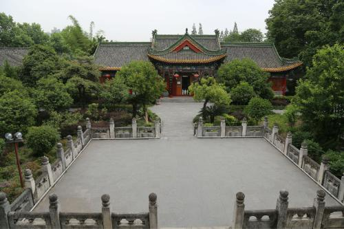

汉中市因汉水而得名，自古就有“天汉”之美称。被评为中国最美十大城镇之一，被誉为“汉人老家”。 汉中是长江第一大支流汉江的源头，陕南地区最大城市，是关中-天水经济区和成渝经济区的重要连接枢纽， 是西安到成都的必经之地，也是两汉三国文化的主要发祥地，素有“汉家发祥地，中华聚宝盆“的美誉。 汉中是一个历史悠久的城市，同时也是一个美丽的值得你流连忘返的地方，她有很多漂亮的景区，下面就请看视频

张良庙为道教主流全真派圣地，坐落于秦岭南坡的紫柏山麓，南距汉中101公里，
北邻凤州76公里，距汉中留坝县城17公里处的庙台子街上。川陕公路横越门首，
交通较为方便。2006年05月25日，张良庙作为明至清古建筑，被国务院批准列入
第六批中国重点文物保护单位名单。
汉江，又称汉水，汉江河，为长江最大的支流，现代水文认为有三源：中源漾水、
北源沮水、南源玉带河，均在秦岭南麓陕西宁强县境内，流经沔县（现勉县）称沔水，
东流至汉中始称汉水；自安康至丹江口段古称沧浪水，襄阳以下别名襄江、襄水。
汉江是长江最长的支流，在历史上占居重要地位，常与长江、淮河、黄河并列，合称“江淮河汉”。